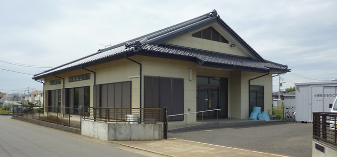

ふるさとセンター
ふるさとセンターは、町会関連行事を中心に、町会内のサークル活動やイベント開催による親睦活動や各種会議のためにご利用頂けます。
町会会員の皆様にはこれらの目的でご利用される場合は、無料で利用することができます。

所在地
千葉県柏市
小青田三丁目8−1
利用案内
ふるさとセンター管理者は 町会副会長 です。
ご利用時は、信用申請書を副会長宅にご提出の上、カギをお受け取り下さい。
管理者の連絡先等がご不明な場合は、各所属班長へご確認をお願いいたします。
現在班長位におかれましては、4月度役員会に配布の「町会三段連絡先」等をご確認のほど、
ご協力賜りますよう、よろしくお願い致します。
使用可能スペース
- 和室１：10畳（入口左脇の部屋です）
- 和室２：12畳（通路奥、突きあたりの部屋です）
- 洋室１・２：約4.5畳（可動パーテーションで2室に区切ることができます）